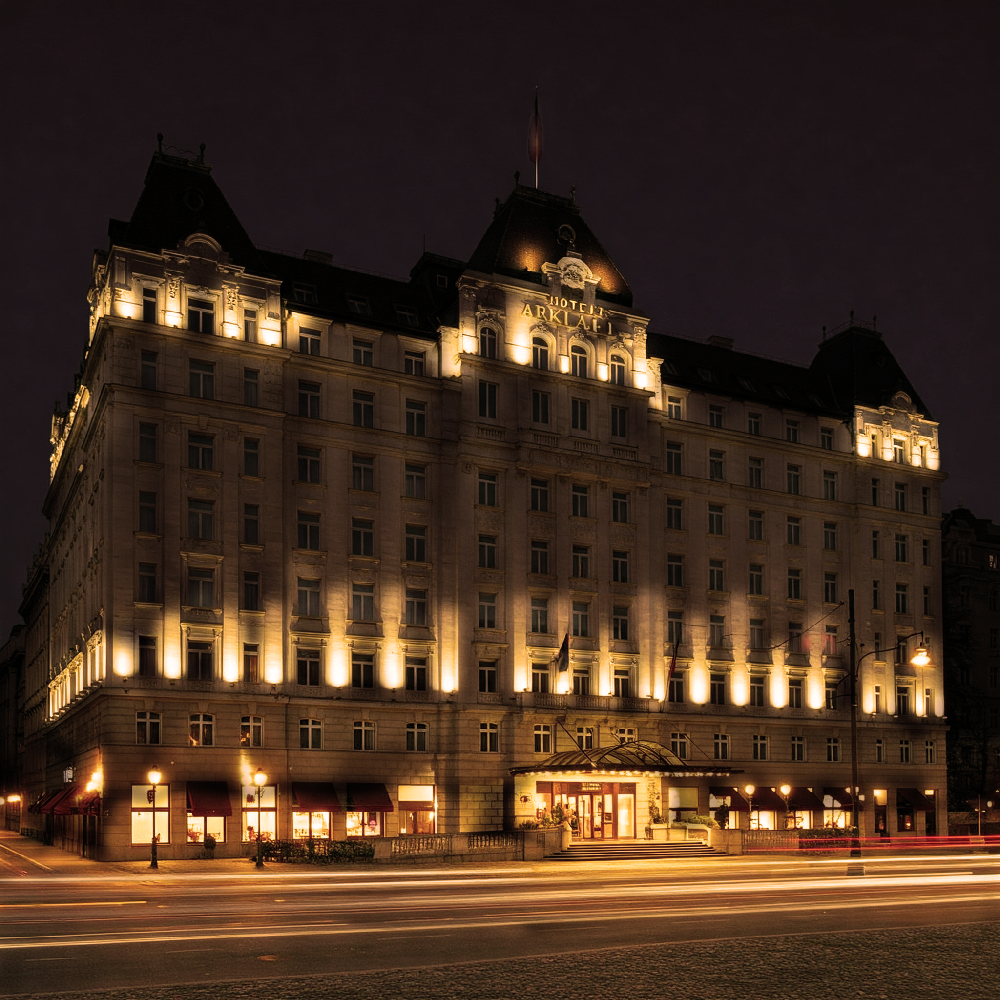

Omicidio all'Arkada
Due sorveglianti assassinati
Un regolamento di conti?

Un crimine brutale sconvolge il prestigioso albergo nel cuore di Praga, mentre la polizia indaga su possibili collegamenti con la criminalità organizzata. Due guardie di sicurezza sono state trovate senza vita nelle prime ore del mattino davanti la suite 777 del rinomato Arkada Hotel. Le vittime, identificate come membri di una sorveglianza privata, esterna all'albergo, presentavano profonde ferite alla gola, suggerendo un'esecuzione rapida e spietata. Le forze dell'ordine sono giunte sul posto dopo che il personale ha scoperto i corpi, ma al momento non vi sono segni evidenti di effrazione. La suite in questione è nota per essere un punto di riferimento per gli affari del signor Milan Stojanovic, già sotto osservazione per presunto racket, estorsioni e traffico di stupefacenti. Gli investigatori non escludono un regolamento di conti nel mondo della criminalità organizzata, ma l'efferatezza del delitto e la rapidità con cui è stato commesso lasciano la polizia con più domande che risposte.
Un nuovo Atto Sacrilego ai danni della Chiesa del Santo Cuore di Gesù
Un nuovo gesto blasfemo scuote la devozione dei praghesi: il crocifisso imbrattato e materiale indecente sparso nell'edificio sacro. La comunità di Praga è stata profondamente scossa stamane dalla scoperta di un atto di vandalismo sacrilego presso la storica Chiesa del Santo Cuore di Gesù. Ignoti hanno imbrattato la croce all'interno dell'edificio con la parola "peccatore" e hanno sostituito i volantini religiosi con pagine provenienti da riviste oscene. Padre Jonas, il parroco della chiesa, ha espresso profondo dolore e sgomento per l'accaduto, definendolo "un attacco non solo alla nostra fede, ma alla dignità di tutta la comunità".
La polizia ha avviato un'indagine per identificare i responsabili di questo insolito e offensivo crimine, che ha suscitato un'ondata di indignazione tra i fedeli. Come nota a margine dell'articolo, segnaliamo anche alcune voci che sono state raccolte fra i più assudui frequentatori della paarrocchia; una fonte, che preferisce mantenere l'anonimato, ha rivelato che l'attacco potrebbe non essere stato casuale, sollevando alcuni dubbi sulla morigeratezza del parroco stesso. Al momento si tratta solo di illazioni che se confermate potrebbero gettare nuova luce sul caso.